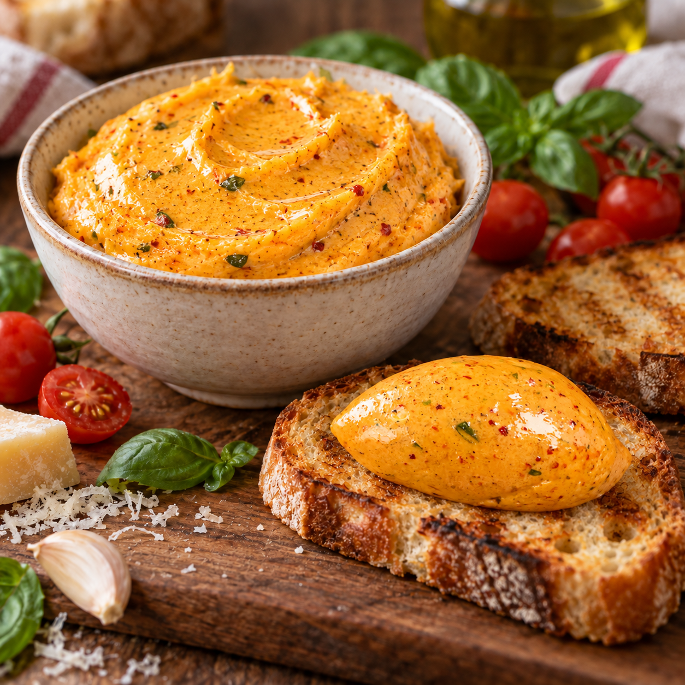

Das macht den Unterschied
Bruschetta Butter

Tomatig, würzig und wunderbar cremig: Diese Bruschetta Butter passt zu frischem Baguette, Grillfleisch, Ofenkartoffeln oder einfach direkt aufs Brot.
Zutaten
500 gButter, zimmerwarm
250 gCherrytomaten
1 KnolleKnoblauch
2–3 ELTomatenmark
30 gParmesan, fein gerieben
3–4 ELGuter Balsamico oder Crema di Balsamico
1 BundBasilikum, gehackt
Nach GeschmackSalz
OptionalChiliflocken
Zubereitung
- Die Butter rechtzeitig aus dem Kühlschrank nehmen und auf Zimmertemperatur bringen. Die Cherrytomaten halbieren. Die Knoblauchknolle in einzelne Zehen teilen, schälen und grob hacken.
- Tomaten und Knoblauch in einer Pfanne bei mittlerer Hitze weich garen. Den Balsamico dazugeben und die Mischung kurz einkochen lassen.
- Das Tomatenmark ganz zum Schluss gründlich unterrühren und die Pfanne sofort vom Herd nehmen.
- Die Tomatenmischung fein pürieren und vollständig abkühlen lassen. Sie darf nicht mehr warm sein, wenn sie zur Butter kommt.
- Die zimmerwarme Butter luftig aufschlagen. Tomatenmischung, Parmesan und Basilikum dazugeben und alles zu einer cremigen Butter aufschlagen.
- Mit Salz und nach Wunsch mit Chiliflocken abschmecken. Vor dem Servieren kurz kalt stellen oder direkt cremig aufs Brot streichen.
Tipp
Die Menge lässt sich gut teilen. Einen Teil direkt servieren und den Rest portionsweise einfrieren.